高併發方案、Sentinel限流、Sleuth鏈路追蹤
SpringBoot微服務項目筆記-24
高併發關注重點
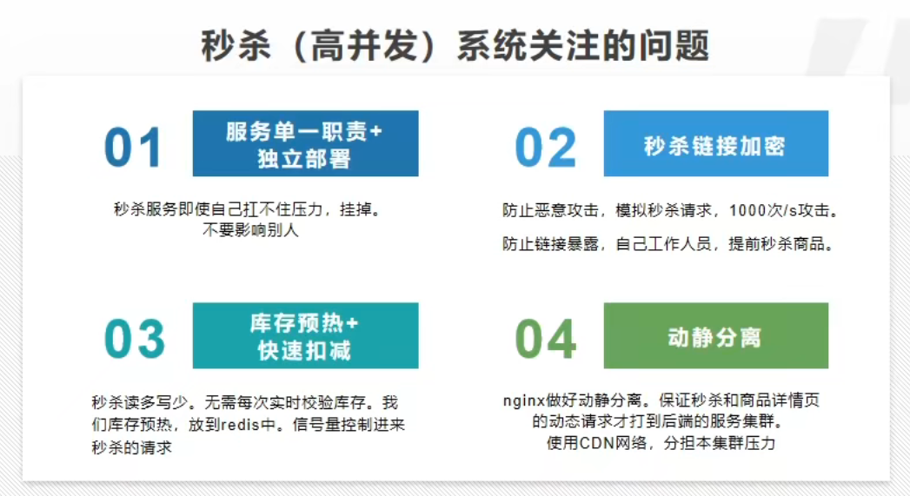
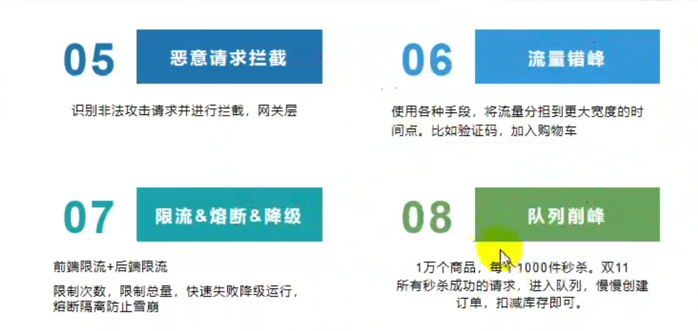
- 單一職責: 專門的服務模組，就只幹這件事，不論要擴容或是掛了都方便
- 鏈結加密: 每場商品都有隨機產生的Token，防有心人提早準備(台鐵搶票系統學一下好嗎?)
- 預熱、扣減: 既然知道會讀多寫少，提前把要被查的資料放Redis；用信號量做令牌，只放行這些數量
- 動靜分離: 靜態資源從網關就打回去，確保來到伺服的都是動態請求
- 攔截惡意請求: 在網關設定，判斷那些非人的操作(例如同IP超快超大量的)，直接擋回去
- 流量錯峰: 用干擾手段使人的操作時間不同(就是噁心用戶)，爭取錯開請求進來的時間
- 限流、熔斷、降級: 降級就是負載超過上限，Show一個"當前流量過高，請稍後重試"之類的惱人畫面給用戶看
- 延遲隊列: 終極手段，管你多少請求只要通過驗證就放進隊列，之後慢慢處理，總會給你處理到，但不保證是現在
Sentinel
官方: https://github.com/alibaba/Sentinel/wiki/%E4%BB%8B%E7%BB%8D
- 用來限流、保護資源
- Sentinel分為核心庫 與 Dashboard可視化界面，核心庫不依賴Dashboard
- 工作原理主要分為三個步驟:
- 定義資源: 叫做"埋點"，即聲明要保護的資源，可以是服務、方法、甚至單純一段程式碼
- 方法很多，最簡單就是用註解或try-catch
- https://github.com/alibaba/Sentinel/wiki/%E5%A6%82%E4%BD%95%E4%BD%BF%E7%94%A8
- 定義規則: 流量控制規則、熔斷降級規則、系統保護規則、來源訪問控制規則 和 熱點參數規則
- 最簡單就是開啟Dashboard用可視化界面建立規則(但這樣用的設定保存在記憶體，重開會消失)
- 檢驗規則是否生效
- 定義資源: 叫做"埋點"，即聲明要保護的資源，可以是服務、方法、甚至單純一段程式碼
使用
- 引包
<dependency>
<groupId>com.alibaba.cloud</groupId>
<artifactId>spring-cloud-starter-alibaba-sentinel</artifactId>
<version>2021.1</version>
</dependency>
- 設定application.properties
- 注意他有2端口，一個是訪問dashboard本身，預設是8080
- 另一個是微服務傳給sentinel中心，預設是8719
# sentinel控制台
spring.cloud.sentinel.transport.dashboard=localhost:8333
# 微服務與控制台傳輸數據的端口
spring.cloud.sentinel.transport.port=8719
-
載Dashboard: https://github.com/alibaba/Sentinel/releases
-
啟動Dashboard
- 預設埠是8080可能衝突，所以自己指定一個
java -jar sentinel-dashboard-1.8.3.jar --server.port=8333
- 訪問
localhost:8333，賬號密碼都是sentinel- 點進去看啥都沒有，因為有訪問的時候才會加載
測試
- 啟動監控後，調用一次API讓Dashboard發現資源
- 隨便手動設定一個限流，然後嘗試快速連續訪問
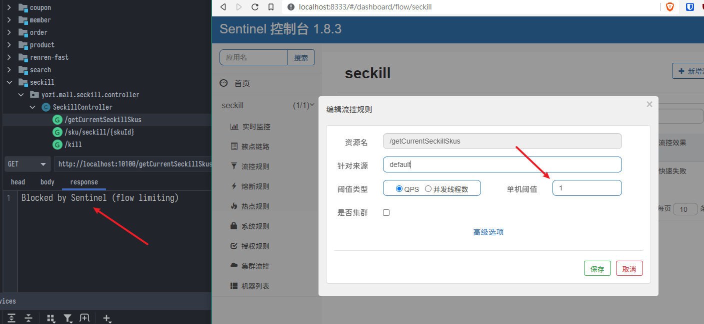
即時監控
- pom.xml
- 注意actuator是依賴於springboot，小心循環依賴
<!--springboot 收集健康狀況信息，提供給sentinel使用-->
<dependency>
<groupId>org.springframework.boot</groupId>
<artifactId>spring-boot-starter-actuator</artifactId>
</dependency>
- application.properties
# 暴露端點給sentinel監控產生圖表
management.endpoints.web.exposure.include=*
- 效果:
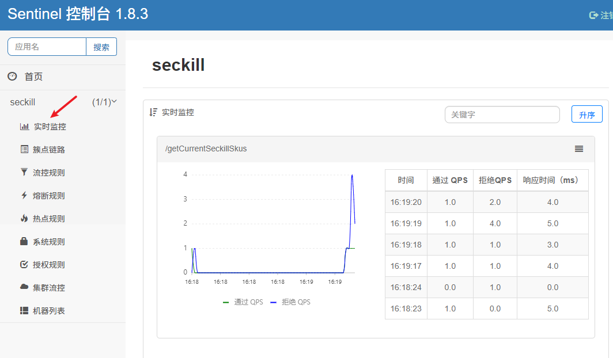
自定義阻塞返回
- MyUrlBlockHandler.java
- 需要實現
BlockExceptionHandler並重寫handle方法 - 注意編碼問題
- 需要實現
/**
* 流量過高阻塞時返回的資訊
*/
@Component
public class MyUrlBlockHandler implements BlockExceptionHandler {
@Override
public void handle(HttpServletRequest request, HttpServletResponse response, BlockException ex) throws
IOException {
// TOO_MANY_REQUEST(10002, "請求流量過大，請稍後再試"),
R error = R.error(BizCodeEnum.TOO_MANY_REQUEST.getCode(), BizCodeEnum.TOO_MANY_REQUEST.getMessage());
response.setCharacterEncoding("UTF-8");
response.setContentType("application/json");
response.getWriter().write(JSON.toJSONString(error));
}
}
- 效果:
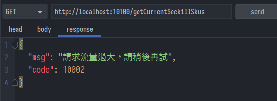
控制規則
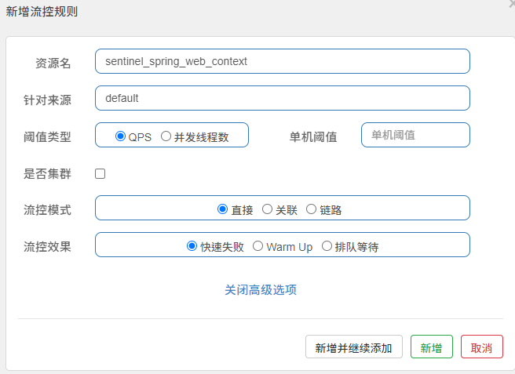
流控模式
- 直接: 就只關注資源本身
- 關聯: A限流，A關聯B，如果B的流量大就對A限流，否則不限
- 鏈路: 指定某個入口開始到這邊的請求(中間可能隔了很多層)，才會被限制
流控效果
- 快速失敗: 直接拒絕拋出異常
- Warm Up: 預熱啓動，例如給定10S，10S內才將請求增加到閾值500，不會一次性放行500個
- 剛開機沒有cache所以反應慢，不能一下子太高流量
- 排隊等待: 如果限制閾值500，此時來了700個請求，500個直接放行，剩下200排隊
- 可以設置超時時間，3S內得不到處理也是失敗
熔斷feign遠程調用
-
情景: A遠程調用B，當B掛掉的時候，希望A還能維持作用
-
Sentinel預設支援openFeign，只要設定application.properties
# feign開啓sentinel
feign.sentinel.enabled=true
- 在原本的Feign接口設定fallback
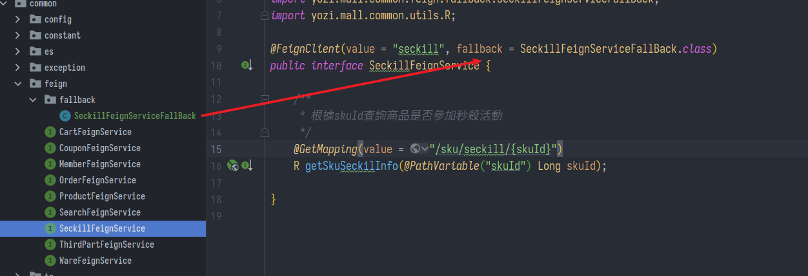
- SeckillFeignServiceFallBack.java
- 實現FeignService接口，並且重寫方法
/**
* 熔斷或降級的實現
*/
public class SeckillFeignServiceFallBack implements SeckillFeignService {
@Override
public R getSkuSeckilInfo(Long skuId) {
// 可以返回某些預設值
// TOO_MANY_REQUEST(10002, "請求流量過大，請稍後再試"),
return R.error(BizCodeEnum.TOO_MANY_REQUEST.getCode(), BizCodeEnum.TOO_MANY_REQUEST.getMessage());
}
}
坑
- 版本問題會導致啟動報錯
FactoryBean threw exception on object creation; nested exception...
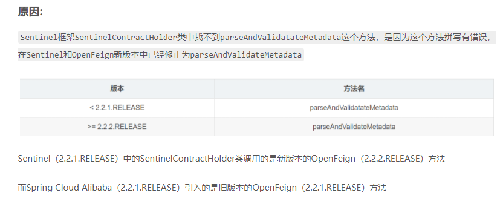
調用方指定熔斷降級策略
參考官方: https://github.com/alibaba/Sentinel/wiki/%E7%86%94%E6%96%AD%E9%99%8D%E7%BA%A7
- 我是A調用方，我大概知道B提供方能負載多少(超過負載B就會爆炸)，為了不讓B爆炸導致我A也受牽連，所以我A遠程調用B的時候做監控，設定超過多少就節制，讓B緩緩
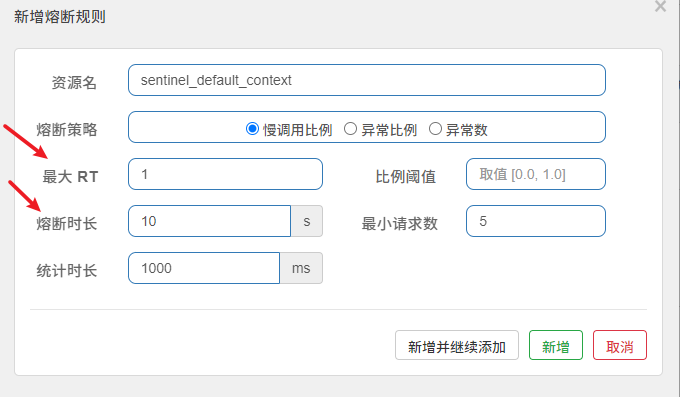
- RT: 響應時間，比如上圖設定意思是 1000ms內，如果進來有5個請求以上，且平均每個請求的響應時間大於1ms，那就熔斷10s
- 進入熔斷後，不會報錯，但調用的是本地FallBack.java中的方法
提供方主動降級策略
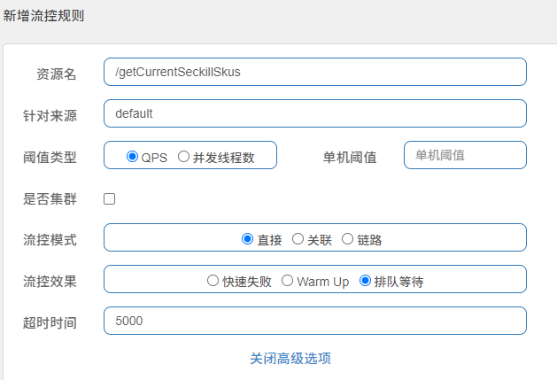
- 我是B提供方，我知道自己只能幹多少活，超過就限流，可以直接甩手不幹或是讓請求排隊等等
- 當然也可以返回降級頁面或預設值，做法就是前面說過的自定義阻塞返回
自訂資源
- 所有controller請求的流控和降級，預設都是用
BlockExceptionHandler中統一的自定義阻塞返回 - service中的每一個資源(可以是一個方法或一個代碼塊)都可以自訂自己的返回
- 一個方法可以被定義成多個資源(可以隨便套娃)，並且每個資源的限流規則不一樣
Try-catch法
- 翻sentinel源碼，最底層的實現就是這樣
try (Entry entry = SphU.entry("資源名")) {
// 業務邏輯
}catch(BlockException e){
log.error("資源被限流{}", e.getMessage());
}
註解法
- 在同類中創造降級後執行的
blockHandler方法，並且參數、返回類型跟原方法一樣 - 使用
@SentinelResource註解資源
public List<SeckillSkuRedisTo> blockHandler(BlockException e) {
log.error("getCurrentSeckillSkusResource被限流了,{}", e.getMessage());
return null;
}
/**
* 獲取到當前可以參加秒殺商品的信息
*/
@SentinelResource(value = "getCurrentSeckillSkusResource", blockHandler = "blockHandler")
@Override
public List<SeckillSkuRedisTo> getCurrentSeckillSkus() {
網關流控
- 已經整合好了，可以直接在gateway模組引包
<dependency>
<groupId>com.alibaba.cloud</groupId>
<artifactId>spring-cloud-alibaba-sentinel-gateway</artifactId>
</dependency>
- 一樣到.properties註冊sentinel端口
# sentinel控制台
spring.cloud.sentinel.transport.dashboard=localhost:8333
# 微服務與控制台傳輸數據的端口
spring.cloud.sentinel.transport.port=8719
- 到控制台可以發現針對網關有專門的規則可以調控
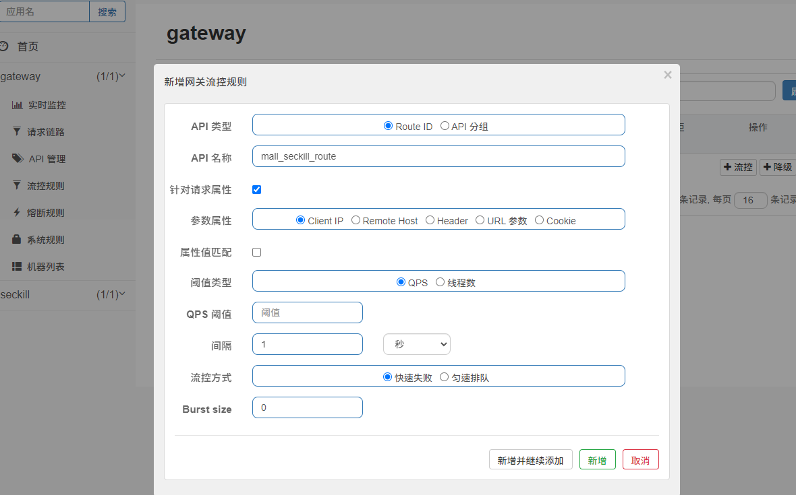
- 並且也可以設定統一的返回
- 什麼Mono.just關鍵字是
響應式編程 - 稍微了解一下是Spring5的新特性webflux，特色在於異步、非阻塞、天然應對高併發
- 什麼Mono.just關鍵字是
/**
* @Description: 自定義阻塞返回方法
**/
@Component
public class SentinelGatewayConfig {
public SentinelGatewayConfig() {
GatewayCallbackManager.setBlockHandler(new BlockRequestHandler() {
// 網關限流了請求，就會調用此回調
@Override
public Mono<ServerResponse> handleRequest(ServerWebExchange serverWebExchange, Throwable throwable) {
R error = R.error(BizCodeEnum.TOO_MANY_REQUEST.getCode(), BizCodeEnum.TOO_MANY_REQUEST.getMessage());
String errJson = JSON.toJSONString(error);
return ServerResponse.ok().body(Mono.just(errJson), String.class);
}
});
}
}
- 一圖理解響應式編程:
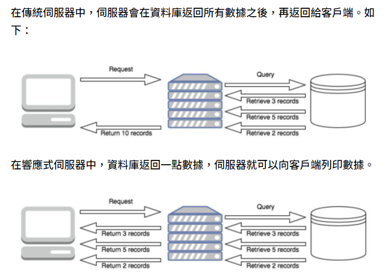
規則持久化
- 預設存在記憶體重開就消失，可以把規則存到Nacos
- 參考: https://www.cnblogs.com/jian0110/p/14139044.html
Sleuth 鏈路追蹤
- 若有一個請求跨越了多個微服務，想知道各服務花費了多少時間，可以用Spring Sleuth追蹤
- 當發現某個服務特別慢，針對改善或直接將其降級
- 核心原理就是每到達一個節點都會記錄時間戳，計算差值就可以得到傳輸時間、某個節點處理請求的時間
- 每一個節點都是一個
Span - 多個
Span共同組成Trace，就是一個完整從客戶端發起到返回的任務
- 每一個節點都是一個
- 並且可以搭配Zipkin可視化
使用
- 引包，sleuth需要spring-cloud
<!-- 鏈路追蹤sleuth -->
<dependency>
<groupId>org.springframework.cloud</groupId>
<artifactId>spring-cloud-starter-sleuth</artifactId>
</dependency>
</dependencies>
<dependencyManagement>
<dependencies>
<dependency>
<groupId>org.springframework.cloud</groupId>
<artifactId>spring-cloud-dependencies</artifactId>
<version>Hoxton.SR9</version>
<scope>import</scope>
<type>pom</type>
</dependency>
</dependencies>
</dependencyManagement>
- application.properties
# 開啓sleuth鏈路追蹤debug日誌
logging.level.org.springframework.cloud.openfeign=debug
logging.level.org.springframework.cloud.sleuth=debug
坑-啟動報錯
- 引入sleuth後啟動報錯
Error creating bean with name 'scopedTarget.defaultTraceSampler'
參考: https://blog.csdn.net/u011039332/article/details/107423951
https://blog.csdn.net/weixin_44743245/article/details/120813121
- 原因: main 線程持有 singletonObjects 的鎖, 並且等待 lettuce-kqueueEventLoop-4-1 來 unpark, lettuce-kqueueEventLoop-4-1 線程需要 singletonObjects 的鎖, 所以 就造成了死鎖
- 解法有以下幾種可選
解法1: 在配置文件application.properties
# 防止啟動死鎖衝突
spring.sleuth.redis.enabled=false
解法2: 啟動類排除TraceRedisAutoConfiguration.class
@SpringBootApplication(exclude = {DataSourceAutoConfiguration.class,TraceRedisAutoConfiguration.class})
解法3: 自己聲明配置一個zipkin的採樣器，而不是使用 spring boot 自動配置的 代碼如下：
@Configuration
public class SleuthSamplerConfiguration {
@Bean
public Sampler defaultSampler() throws Exception {
// 这个值是采样率，设置为1就是100%采样，每一条请求都采，0.1就是10%采样率
Float f = new Float(0.1f);
SamplerProperties samplerProperties = new SamplerProperties();
samplerProperties.setProbability(f);
ProbabilityBasedSampler sampler = new ProbabilityBasedSampler(samplerProperties);
return sampler;
}
}
zipkin
可視化顯示鏈路，官方: https://zipkin.io
- 拉docker服務，也有jar執行版，但docker比較通用
docker run -d -p 9411:9411 openzipkin/zipkin
- 引包
<!-- 可視化zipkin已經包含鏈路追蹤sleuth -->
<dependency>
<groupId>org.springframework.cloud</groupId>
<artifactId>spring-cloud-starter-zipkin</artifactId>
</dependency>
- application.properties
- 每個服務都要設定
# 鏈路追蹤可視化zipkin伺服器
spring.zipkin.base-url=http://localhost:9411/
# 關閉服務發現，否則spring cloud會把zipkin的url當做服務名稱
spring.zipkin.discovery-client-enabled=false
# 使用http的方式傳輸數據
spring.zipkin.sender.type=web
# 設置抽樣採集率為100%，預設是0.1
spring.sleuth.sampler.probability=1
- 瀏覽器訪問 http://localhost:9411/
- 發起請求，看到底在哪邊耗時最多、哪裡是瓶頸
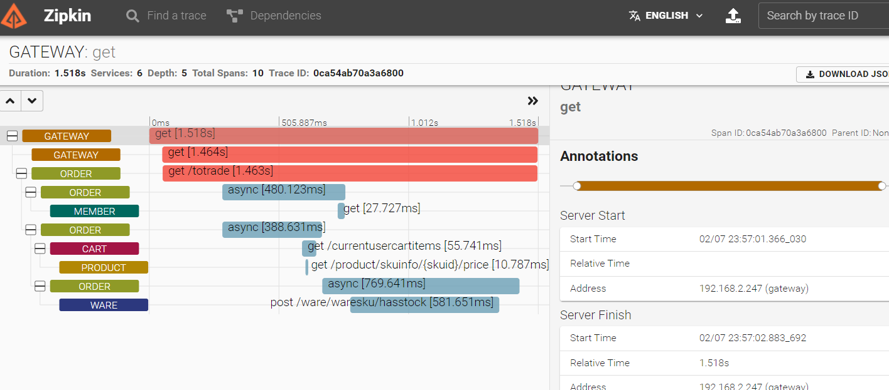
- 發現只要有feign遠程調用就特別慢，盡量少用，真要用要盡量做異步
- 而發消息給MQ跟接收都超快，難怪喜歡用消息隊列，真的舒服
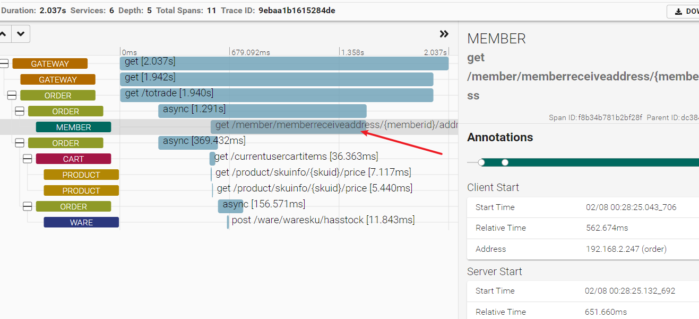
- 還可以查看依賴
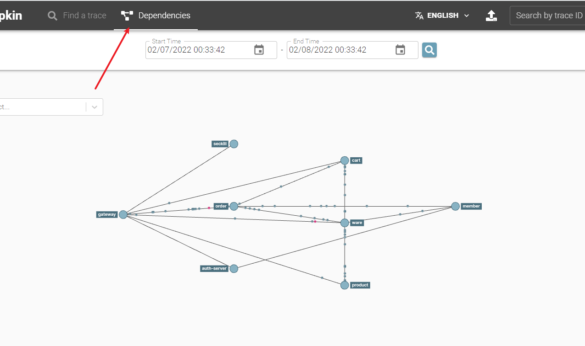
- 選取節點，能查看他的上下游
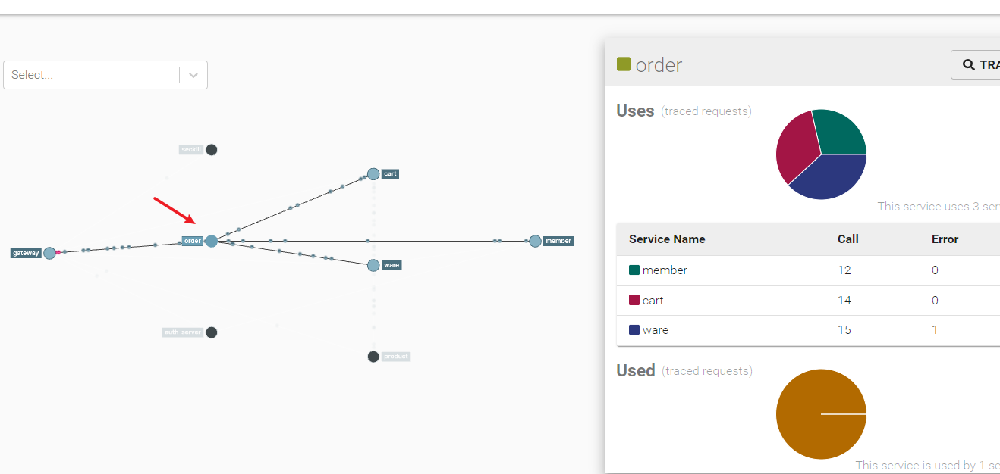
持久化
- 預設是存在記憶體，一樣關機就GG
- 可以存到MySQL或elasticsearch，由於追蹤要搜尋、篩選，用ES更好一點
docker run --env STORAGE_TYPE=elasticsearch --env ES_HOSTS=localhost:9200 openzipkin/zipkin-dependencies
高級篇小結
- 併發有三寶: 緩存、異步、隊排好
上次修改於 2022-02-10